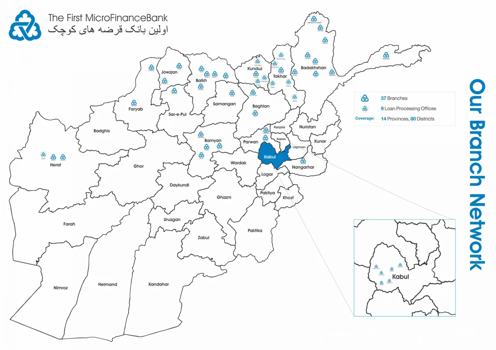

About Us
The First MicroFinanceBank-Afghanistan (FMFB-A) started its operation in 2004 and is part of the Aga Khan Agency for Microfinance (AKAM), which has financial institutions operating in over 15 countries throughout the developing world. It is affiliated with the Aga Khan Development Network (AKDN), a group of nine development agencies working in health, education, culture and rural economic development, primarily in Asia and Africa. Our primary objective in Afghanistan is to contribute to poverty alleviation and economic development through the provision of sustainable financial services to the poor and underserved. Since 2016, we are a member of the Global Alliance for Banking on Values (GABV) – an independent network of the banks using finance to deliver sustainable economic, social and environmental development. Our values- based banking agenda focuses on providing affordable financial services that promote entrepreneurship, agriculture, incremental housing and clean energy in Afghanistan. FMFB-A is the market leader with 67% market share in terms of Gross Loan Portfolio (GLP).
